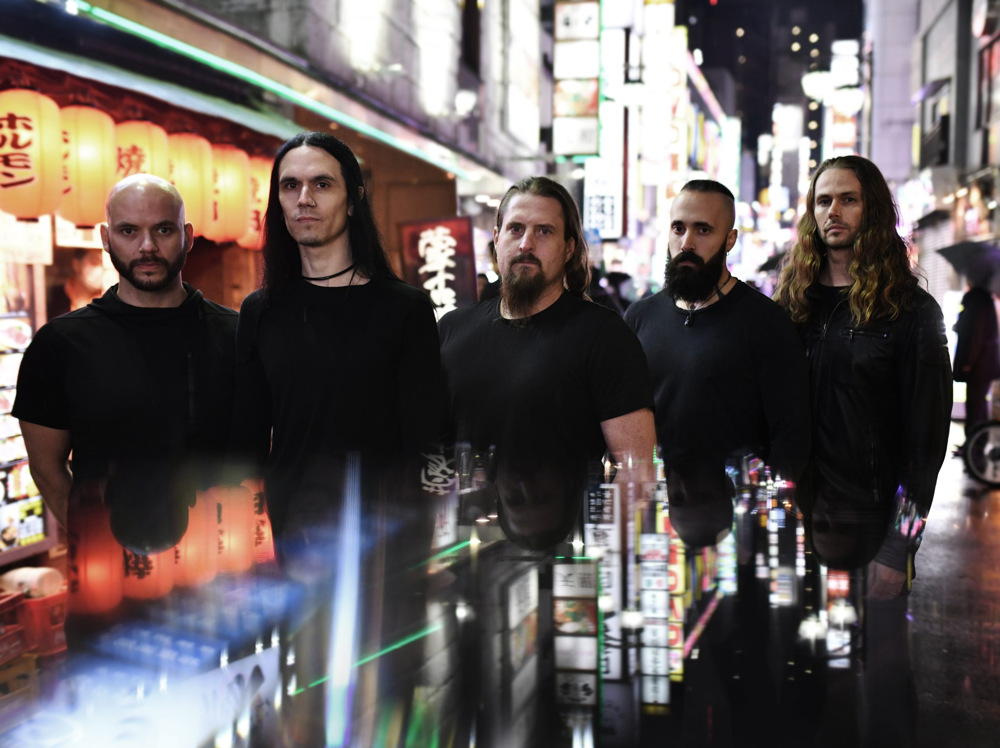
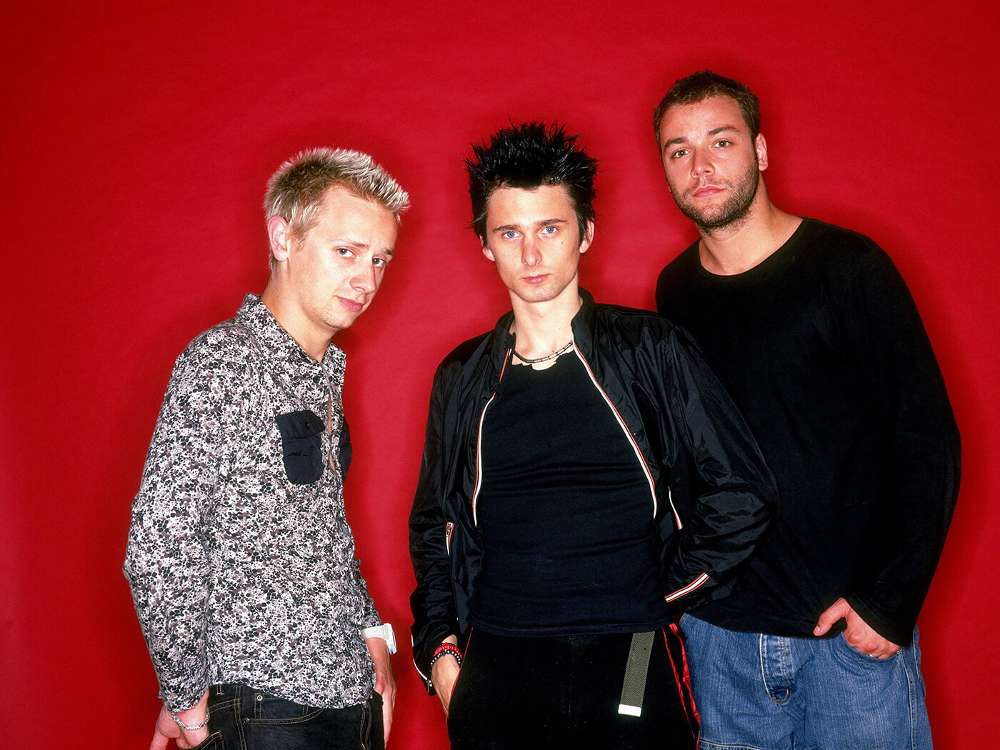

Top 5 Músicas
A música é uma parte essencial da minha vida. A maneira como ela consegue provocar emoções, criar atmosferas e transportar-nos para diferentes momentos e lugares é algo que me fascina profundamente. Nesta secção, vou apresentar algumas das minhas bandas favoritas, bem como a minha música preferida de cada uma sem uma ordem específica, e compartilhar um pouco sobre o que cada uma delas representa para mim.
The Cure

Os The Cure já foram tanta coisa que deixa impossível classificar o género deste incrível grupo que desde sempre me acompanha. De vez em quando ponho-me a pensar "Que género serão eles?" e a única coisa que consigo responder é: Eles são The Cure. Há algo na fórmula secreta de Robert Smith que os torna uma banda irrepetível, seja qual for o estilo que eles tentem fazer. Ainda assim, a década de 80 foi crucial para estabelecer a estética da banda. Álbuns como Pornography, Faith, Seventeen Seconds e Disintegration são definitivamente uma das razões pela qual adoro tanto este grupo. Recordo-me de um episódio de South Park onde uma personagem grita para Robert Smith "Disintegration is the best album ever!" e eu não poderia concordar mais. Sendo assim, apesar de ser uma escolha difícil, a minha aposta para melhor música seria a que dá o nome a esse álbum e marca a estética gótica, pesada e Niilista do mesmo, Disintegration.
Ne Obliviscaris
Esta banda Australiana criada em 2003 tem algo de muito especial no som deles. Não é todos os dias que vemos uma mistura de estilos tão bem executada como em Ne Obliviscaris, que misturam Death Metal Progressivo, Black Metal e a Música Clássica, criando um estilo próprio e que certamente arrancará uma reação a quem o ouvir. Tive o enorme prazer de ouvir esta banda ao vivo e devo dizer que foi uma experiência que mudou para sempre a forma como encaro a música... Como algo pode ser tão caótico, destrutivo e belo ao mesmo tempo? Tecnicamente, cada membro executa o seu papel com uma habilidade impressionante, fazendo deles uma das bandas mais tecnicamente evoluídas da atualidade. Em relação à música preferida, a "Forget Not" do álbum Portal of I leva o trono. Com um tema incrivelmente tocante e uma execução belíssima que aborda a perda de pessoas queridas aos membros da banda, esta música torna-se assim na minha opinião, uma das melhores de sempre.
Joy Division

Joy Division, formada em 1976 em Manchester, foi uma banda pioneira do pós-punk, conhecida pelo seu som sombrio, minimalista e emocionalmente carregado. Liderada pelo vocalista Ian Curtis, cuja voz profunda e letras introspectivas abordavam temas como alienação, depressão e mortalidade, a banda criou uma estética única que influenciou gerações. Infelizmente, a morte precoce de Ian Curtis fez com que apenas dois álbuns de estúdio fossem lançados, ainda que eles tenham sido suficientes para imortalizar a banda. Este é um caso onde é dificíl escolher uma música preferida dado a qualidade consistente que a banda tinha, no entanto, "Love will tear us apart" será na minha opinião para sempre um hino do Post Punk e uma das músicas mais marcantes de sempre. Composta por Ian Curtis, a música reflete a turbulência na sua vida pessoal, especialmente no seu casamento complicado e sua luta com a depressão. A voz grave de Curtis adiciona profundidade emocional, enquanto a letra explora o desgaste emocional em relacionamentos e a sensação de inevitabilidade.
Muse
Muse, formada em 1994 em Teignmouth, Inglaterra, é uma banda que redefiniu o rock alternativo com a sua mistura única de rock progressivo, música clássica, eletrônica e uma energia quase operática. Os primeiros quatro álbuns, Showbiz, Origin of Symmetry, Absolution e Black Holes and Revelations, são nada menos que obras-primas. Cada um deles exala uma criatividade e uma habilidade técnica que capturam tanto a grandiosidade quanto a vulnerabilidade humana. Para mim,"Citizen Erased" do Origin of Symmetry é o ápice de sua genialidade. Essa faixa encapsula tudo que torna os Muse extraordinários: intensidade emocional, variações dinâmicas brilhantes e uma narrativa musical que é tão grandiosa quanto introspectiva. É uma música que transcende o gênero e que marca profundamente quem a ouve. Admito que embora os álbuns mais recentes tragam um som mais acessível e menos ambicioso, isso não diminui o impacto monumental dos primeiros trabalhos da banda. Eles não apenas criaram músicas, eles definiram experiências sonoras. O poder, a complexidade e a emoção contidas nestes álbuns consolidam Muse como uma das minhas bandas favoritas de todos os tempos, mesmo que o brilho inicial tenha se dissipado ao longo do tempo.
David Bowie

Para mim, o Bowie foi muito mais do que um músico. Quando penso na palavra "Artista" é sem dúvida ele que me vem à cabeça. Ele foi um ícone cultural que desafiou convenções e redefiniu o que significa ser inovador na arte desde o início de sua carreira nos anos 60 até aos seus trabalhos finais em 2016. O Bowie tem um reportório enorme de músicas por onde escolher, no entanto, vou recuar até 1972 para falar sobre a minha música preferida. Saída do incrível álbum "Ziggy Stardust And The Spiders From Mars", a Lady Stardust continua hoje a ter o mesmo impacto em mim do que da primeira vez que a ouvi. A progressão de arcordes no piano, uma linha de baixo fantástica e o ritmo lento da bateria juntos com a voz marcante do Bowie tornam-na numa das minhas músicas preferidas de todos os tempos. A música de certa forma fala do próprio Bowie, um artista que quebrou rótulos com a sua irreverência e da forma como ele foi inicialmente incompreendido pela sua "Estranheza", que não era mais senão a forma de um génio de expressar.